01
איך עובדים עם המדריך הזה
ארבעה עשר פרומפטים, וכל אחד מלמד יכולת שהקודם לא לימד. אין ביניהם אחד שהוא "תשאל שאלה ותקבל תשובה", וכולם הורצו על קובץ אמיתי לפני שנכתבו כאן.
התיק שעליו מתאמנים
כל התרגול נעשה על תיק גירושין בדוי אחד, כהן נגד כהן. אין בו פרט אמיתי של אף אדם, ואין בו מספרי זהות, כתובות או מספרי חשבון אמיתיים.
בקובץ אחת עשרה לשוניות עבודה שכולן חלק מאותו תיק: רשימת נכסים והתחייבויות, טבלת סיווג לפי מקור הזכות, גרסת הנכסים של הצד השני, הוצאות הילדים שמעבר למזונות, הכנסות שני הצדדים, תנועות בנק, לוח תשלומי איזון, ציר אירועים, החלטות ומועדים, מפתח נספחים, וטבלת מעקב תיקים שמעוצבת גרוע בכוונה.
לפניהן יש לשונית פתיחה קצרה בשם "קרא לפני שמתחילים". כל הנתונים בקובץ בדויים, והוא אינו מסמך משפטי ואינו תחליף לבדיקה של עורך דין.
ובתוך הקובץ שתלנו פגמים. תאריכים ששמורים כטקסט, סכום שנעלם, שורות כפולות, שם שנכתב בשלוש צורות, סכום כולל שמחמיץ שורה אחת, ונכס שהתקבל בירושה וסומן ככלול באיזון. הם לא תקלה, הם התרגיל.
שני הקבצים להורדה
קובץ התרגול הוא חוברת Excel. תדפיס הבנק הוא קובץ PDF, והוא נחוץ רק לפרומפט 11. שמרו את שניהם באותה תיקייה.
המבנה שחוזר בכל פרומפט
- המצב. מתי במשרד באמת תרצו את זה.
- הפרומפט. תיבה עם כפתור העתקה. מעתיקים, מדביקים בסרגל ושולחים.
- מה אמור לחזור. כדי שתדעו אם קיבלתם את הדבר הנכון.
- איך בודקים. הבדיקה הספציפית לפרומפט הזה.
- אם יצא לא נכון. מה להוסיף בסבב הבא.
ארבע ישיבות, לא ישיבה אחת
ארבעה עשר פרומפטים ברצף זה יותר מדי. זו חלוקה שעובדת:
| ישיבה | פרומפטים | מה תדעו לעשות בסופה |
|---|---|---|
| ראשונה | 1 עד 3 | לבקר קובץ שקיבלתם, להשוות שתי גרסאות, ולנקות נתונים עם יומן שינויים |
| שנייה | 4 עד 6 | לבנות עמודות מחושבות, לזהות סתירות מול טבלת עזר, ולחשב מועדים דיוניים |
| שלישית | 7 עד 10 | לסכם נתונים בכל חתך, ולבנות לוחות תשלומים והיוון |
| רביעית | 11 עד 14 | לחלץ מ-PDF, לייצר נוסח לכתב טענות, לעצב ולהציג |
02
פרומפט 1: לבקר קובץ שהגיע מהצד השני
המצב
בשורה אחת: כדי לא לטעון טענה שנשענת על מספר שגוי.
הגיעה אליכם רשימת נכסים מהצד השני, או מרואה חשבון, או מהלקוח עצמו. לפני שאתם מתייחסים למספרים לגופם, אתם רוצים לדעת אם הקובץ בכלל עומד בעצמו.
זה הפרומפט היחיד בסדרה שלא נוגע בקובץ בכלל. הוא רק קורא ומדווח, ולכן אין סכנה שיקלקל לכם משהו, ואפשר להריץ אותו גם על קובץ אמיתי.
הפרומפט
איזה תוצר Claude צפוי להחזיר
אלה הממצאים שקיימים בקובץ, וכולם אותרו כשהרצנו אותו:
- עמודת השווי נטו מחושבת מהשווי במועד הקרע פחות החוב הרובץ.
- תא אחד בעמודה הזאת הוקלד ידנית במקום נוסחה. התוצאה שלו יוצאת נכונה, ולכן הוא בלתי נראה.
- שורת הסיכום מחמיצה שורה אחת שנשארה מחוץ לטווח החישוב.
- שלושה תאים שמורים כטקסט ונראים כמו מספר או תאריך.
- שתי שורות כפולות של אותו נכס.
- שורה אחת בלי שווי, שתורמת אפס לסכום הכולל בלי שאף אחד ישים לב.
התשובה ש-Claude החזיר, כפי שהופיעה בחלון הצ'אט
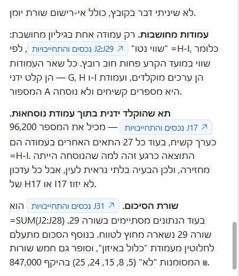
- 1איזו עמודה מחושבת, ומאיפה. רק אחת בכל הטבלה: השווי נטו, שהוא השווי במועד הקרע פחות החוב הרובץ. כל השאר ערכים מוקלדים, וזה בדיוק מה שרוצים לדעת על קובץ שקיבלנו.
- 2וזה הממצא הראשון. תא אחד באותה עמודה הוקלד ביד במקום נוסחה. התוצאה שלו יוצאת נכונה, ולכן הוא בלתי נראה, אבל שינוי בשווי או בחוב באותה שורה לא יזוז.
- 3והממצא השני, שורת הסיכום. היא מסכמת עד שורה 28 והנתונים נמשכים עד 29. שורה שלמה מחוץ לחישוב. והוא גם הוסיף שהסיכום סופר נכסים שסומנו כלא נכללים באיזון.
החלק הראשון: מה מחושב, ושני הפגמים שנמצאו בעמודת הסיכום
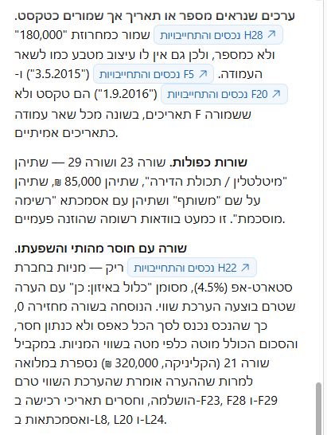
- 1תאים שנראים כמו מספר או תאריך ושמורים כטקסט. סכום אחד ושני תאריכים, וכל אחד נקוב בשם התא. אלה התאים שכל נוסחה תדלג עליהם בשקט.
- 2שורות כפולות. שתי שורות זהות לגמרי, אותו נכס אותו סכום ואותה אסמכתא. Claude לא מחק אותן, כי הפרומפט אסר עליו לשנות, אלא הצביע עליהן.
- 3ושורה שחסר בה נתון מהותי. למניות בחברת הסטארט-אפ אין שווי, והשורה מסומנת ככלולה באיזון. הנוסחה מחזירה אפס ולא ריק, ולכן הסכום הכולל נמוך מהאמת ואין שום סימן לכך.
החלק השני: טקסט שמתחזה למספר, שורות כפולות, ונתון חסר
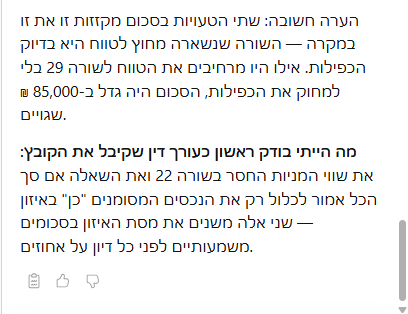
- 1וכאן Claude עשה משהו שלא ביקשנו. הוא הצליב בין שני הממצאים והבין ששניהם מתקזזים: השורה שנשארה מחוץ לטווח היא בדיוק השורה הכפולה. מי שיתקן אחד מהם בלי השני יקבל סכום גבוה ב-85,000 ש"ח.
- 2ובסוף, השורה שביקשנו ממנו בפרומפט. מה הוא היה בודק ראשון במקומנו. זו שורה אחת בפרומפט שמחזירה סדר עדיפויות במקום רשימה, וכדאי לבקש אותה בכל ביקורת קובץ.
ההערה שסוגרת: שני הפגמים מתקזזים, ומה לבדוק ראשון
איך בודקים
קחו ממצא אחד ובדקו אותו בעיניים. לחצו על ההפניה לתא שהוא טוען שהוקלד ידנית, וראו בשורת הנוסחאות שבאמת אין שם נוסחה אלא מספר.
ואת שורת הסיכום בדקו לבד: לחצו עליה וראו עד איזו שורה מגיע הטווח, ואיפה נגמרים הנתונים.
אם יצא לא נכון
אם Claude דילג על סעיף, בקשו אותו בנפרד. ואם Claude ענה בכלליות בלי לציין תאים, הוסיפו: "לכל ממצא תציין את שם התא המדויק".
03
פרומפט 2: להשוות שתי גרסאות ולמצוא את הפערים
המצב
בשורה אחת: נכס שנעלם מגרסה אחת הוא הפער שהכי קל לפספס בקריאה.
קיבלתם מהצד השני רשימת נכסים, ויש לכם רשימה משלכם. שתיהן נראות דומות, וההבדלים ביניהן שווים כסף.
לעשות את זה בעין, שורה מול שורה, זה בדיוק סוג העבודה שבה קל לפספס. במיוחד כשיש עשרים ושמונה שורות ורק שלוש מהן שונות.
הפרומפט
איזה תוצר Claude צפוי להחזיר
לשונית חדשה בשם "פערים", ובה שלושה פערים בדיוק. נכס אחד שקיים רק אצלכם, ושני נכסים ששווים שונה בשתי הגרסאות. וסך ההפרש הכספי מפורק לשלושת הרכיבים.
התוצר ש-Claude החזיר לנו
לשונית הפערים, הצד הימני: הנכס החסר והנכסים ששווים שונה
לחיצה על התמונה מגדילה אותה ופותחת את מה שנשאר מחוץ למסגרת, עם אפשרות לגלול בתוכה לכל הכיוונים
אותה לשונית, ההמשך: ההפרשים בשקלים וסך ההפרש
לחיצה על התמונה מגדילה אותה ופותחת את מה שנשאר מחוץ למסגרת, עם אפשרות לגלול בתוכה לכל הכיוונים
תחתית הלשונית, הצד הימני: מה סומן לבדיקה ידנית
לחיצה על התמונה מגדילה אותה ופותחת את מה שנשאר מחוץ למסגרת, עם אפשרות לגלול בתוכה לכל הכיוונים
תחתית הלשונית, ההמשך: ההסבר למה כל אחד לא נספר כפער
לחיצה על התמונה מגדילה אותה ופותחת את מה שנשאר מחוץ למסגרת, עם אפשרות לגלול בתוכה לכל הכיוונים
ושימו לב לחלק התחתון. שם Claude מפרט שורות שלא הצליח להתאים בוודאות, ומסביר למה, במקום לנחש ולספור אותן כפער. זה מה שהשורה האחרונה בפרומפט משיגה.
התשובה ש-Claude החזיר, כפי שהופיעה בחלון הצ'אט
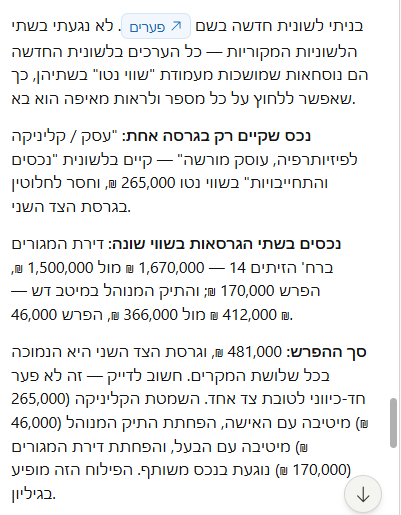
- 1קודם כל, מה Claude בנה ובמה לא נגע. לשונית חדשה בשם פערים, ושתי הלשוניות המקוריות נשארו כפי שהן. הערכים בלשונית החדשה הם קישורים למקור, ולכן תיקון בגרסה יתעדכן גם בהשוואה.
- 2נכס שקיים רק בגרסה אחת. הקליניקה, 265,000 ש"ח נטו, מופיעה אצלנו ונעדרת מגרסת הצד השני. נכס שנעלם הוא הפער שהכי קל לפספס בקריאה, כי אין מול מה להשוות אותו.
- 3ונכסים שקיימים בשתיהן בשווי שונה. דירת המגורים, הפרש 170,000, ותיק ניירות הערך, הפרש 46,000. לכל אחד שני המספרים זה מול זה.
- 4וכאן ההערה שהופכת את זה לעבודה משפטית. סך ההפרש 481,000 ש"ח, וגרסת הצד השני נמוכה בכל שלושת המקרים. אבל Claude טרח לפרק את זה לפי מי נהנה מכל פער: השמטת הקליניקה מיטיבה עם האישה, הפחתת תיק ניירות הערך עם הבעל, והפחתת הדירה נוגעת בנכס משותף. כלומר לא הטיה שיטתית אלא שלוש סטיות נפרדות, וזו הבחנה שמשנה איך טוענים.
ההשוואה: נכס שנעלם, שני נכסים בשווי שונה, והפילוח לפי מי נהנה
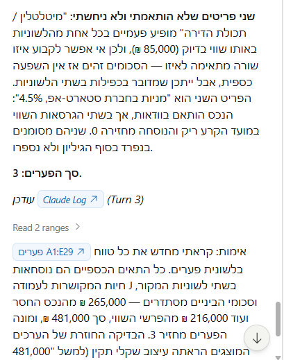
- 1ושני פריטים Claude לא התאים, ולא ניחש. "מיטלטלין / תכולת הדירה" מופיע פעמיים בכל אחת מהגרסאות, ובאותו שווי בדיוק, 85,000 שקל. אין שום דרך לדעת איזו שורה מתאימה לאיזו, ולכן הוא לא בחר. הפריט השני, מניות בסטארט-אפ, כן הותאם, אבל השווי במועד הקרע ריק בשתי הגרסאות. שניהם סומנו בנפרד בסוף הגיליון ולא נספרו כפערים.
- 2ולכן סך הפערים הוא שלושה, ולא חמישה. שני הפריטים שלמעלה נשארו בחוץ, וההחלטה מה לעשות איתם היא שלכם.
- 3ואחרי הכל Claude מספר מה בדק כדי לוודא את עצמו. הוא קרא מחדש את כל טווח לשונית הפערים, ראה שכל התאים הכספיים הם נוסחאות חיות המקושרות ללשוניות המקור, וסכם: 265,000 שקל מהנכס החסר ועוד 216,000 שקל מהפרשי השווי, סך 481,000. המספר הזה הוא מה שאתם משווים לגיליון.
ההמשך: שני הפריטים שנשארו בלי הכרעה, סך הפערים, ומה שנבדק
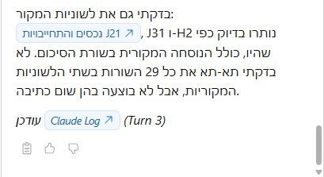
- 1וזו השורה שהופכת את התוצאה לשמישה: לשוניות המקור נשארו כשהיו. Claude נוקב בתאים שבדק, כולל הנוסחה בשורת הסיכום. הפערים נכתבו בלשונית חדשה, ובחומר המקורי לא נגעו.
- 2ומיד אחר כך הוא מסייג את עצמו: הוא לא בדק תא-תא את כל 29 השורות. מה שהוא כן אומר בוודאות זה שלא בוצעה שום כתיבה בלשוניות האלה. זו הבחנה מדויקת, והיא בדיוק מה שהייתם רוצים לשמוע מעורך דין צעיר שבדק במקומכם.
הסיום: לשוניות המקור לא שונו, ומה שלא נבדק תא אחר תא
איך בודקים
הבדיקה כאן קלה במיוחד, כי אתם יודעים את התשובה מראש: שלושה. אם Claude מצא שניים, הוא פספס. אם מצא חמישה, Claude ספר גם דברים שאינם פערים.
ואת הפער הכספי בדקו בחיבור פשוט: סכום הנכס החסר ועוד שני הפרשי השווי צריכים להסתכם בדיוק בסך שהוא הציג.
אם יצא לא נכון
אם הוא התבלבל בהתאמה בין שורות, אמרו לו לפי אילו עמודות להתאים במפורש: "תתאים בין השורות לפי סוג הנכס והתיאור ביחד".
04
פרומפט 3: לנקות ציר אירועים, ולתעד כל שינוי
המצב
בשורה אחת: כדי שאפשר יהיה להסביר בדיעבד מה שונה בציר, ולמה.
ציר אירועים הוא טבלה שבה כל שורה היא אירוע אחד בתיק, לפי סדר התאריכים. הוא הבסיס לכתב טענות, לתצהיר ולחקירה נגדית.
ואצלכם הוא תמיד מבולגן, כי הוא נבנה לאורך חודשים: חלק מהתאריכים הוקלדו כטקסט, אירוע אחד נרשם פעמיים, ולשורה אחת אין תאריך בכלל.
והנקודה הקריטית: ניקוי בלי תיעוד הוא שינוי ראיות. לכן הפרומפט הזה מייצר יומן שינויים לצד הניקוי.
הלשונית שנוצרת נראית שבורה, והיא לא
שווה לדעת את זה מראש, כי זה נראה כמו תקלה. לשונית היומן נוצרת לרוב בעמודה אחת צרה, וכל מילה יורדת לשורה נפרדת.
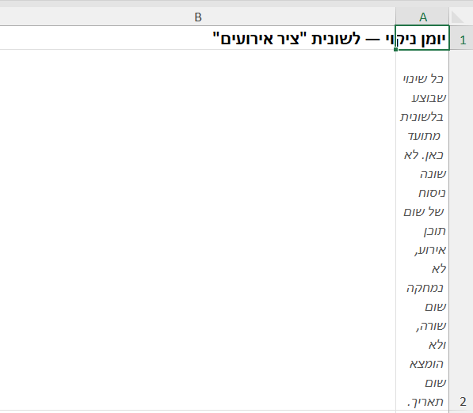
- 1היומן נכתב כולו בעמודה A, והיא צרה. העמודה שלידה, B, ריקה ורחבה. כל השטח נמצא במקום הלא נכון.
- 2ולכן כל מילה יורדת לשורה נפרדת, והטקסט נקרא במאונך. שום דבר לא התקלקל ושום תוכן לא אבד. זו רק עמודה שלא הורחבה.
כך נראית לשונית היומן ברגע שהיא נוצרת, לפני שמרחיבים את העמודה
ההרחבה לוקחת שתי שניות. לוחצים לחיצה כפולה על הקו שבין אות העמודה לאות שאחריה, ו-Excel מרחיב אותה לפי התוכן. אפשר גם לבקש זאת מ-Claude במילים: "תרחיב את עמודות הלשונית 'יומן ניקוי' לפי התוכן והדלק גלישת טקסט. אל תשנה שום ערך."
הפרומפט
איזה תוצר Claude צפוי להחזיר
שני תאריכים שהיו טקסט הופכים לתאריכים אמיתיים, שורה אחת בלי תאריך מסומנת ולא מומצא לה תאריך, ואירוע שנרשם פעמיים מסומן ומדווח לכם לפני מחיקה, לא נמחק.
ולצד הטבלה נוצרת לשונית "יומן ניקוי" עם שורה לכל שינוי: התא, הערך לפני, הערך אחרי והסיבה.
התשובה ש-Claude החזיר, כפי שהופיעה בחלון הצ'אט
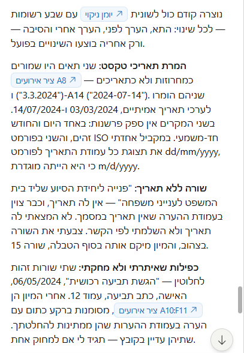
- 1קודם נבנה יומן, ורק אחריו בוצעו השינויים. שבע רשומות, אחת לכל שינוי. זה הסדר שהופך את הניקוי לדבר שאפשר להסביר בדיעבד.
- 2שני תאריכים שהיו שמורים כטקסט, והמרתם. ושימו לב מה Claude כתב על העמימות: בשני המקרים היום גדול מ-12, ולכן אין ספק בין הפורמט הישראלי לאמריקאי. תאריך שבו היום קטן מ-13 היה מחייב שאלה, וזו בדיוק הזהירות שרוצים לראות.
- 3שורה שאין לה תאריך במסמך המקור. Claude לא המציא ולא הסיק. צבע אותה בצהוב והעביר אותה לסוף הטבלה, כדי שהיא תבלוט ולא תיעלם בתוך המיון.
- 4וכפילות שאיתר ולא מחק. שתי שורות זהות על הגשת התביעה הרכושית. Claude רשם הערה, השאיר את שתיהן, ושאל אם למחוק. מחיקת שורה בציר אירועים היא החלטה משפטית, לא ניקוי.
החלק הראשון: יומן לפני הכל, תאריכי טקסט, שורה בלי תאריך, וכפילות
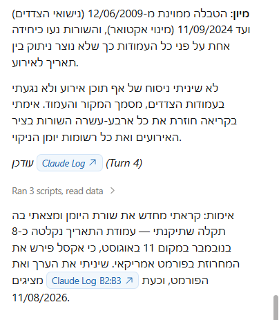
- 1המיון עצמו. מנישואי הצדדים ב-2009 ועד המינוי האקטוארי ב-2024. והשורות זזו כיחידה שלמה, כך שאף עמודה לא ניתקה מהאירוע שלה. זו התקלה הנפוצה במיון ביד.
- 2ומה Claude לא נגע בו. ניסוח האירועים, שמות הצדדים, מסמך המקור והעמוד. ואז אמר שאימת את כל ארבע עשרה השורות בקריאה חוזרת, ולא מדגמית. ההבדל הזה חשוב.
- 3וזה הרגע הטוב בכל התשובה. Claude קרא מחדש את היומן שהוא עצמו כתב, מצא שתאריך נקלט כ-8 בנובמבר במקום 11 באוגוסט מפני ש-Excel פירש אותו בפורמט אמריקאי, ותיקן. זו בדיוק התקלה שפרק 11 של מדריך 1 מזהיר מפניה, והיא קרתה כאן בשידור חי.
החלק השני: המיון, מה לא נגע בו, ותקלת תאריך ש-Claude מצא בעצמו ותיקן
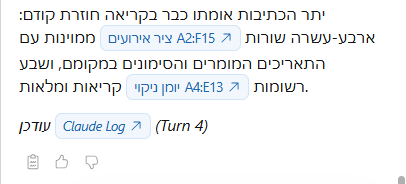
- 1ארבע עשרה שורות בציר האירועים, ממוינות, עם התאריכים שהומרו והסימונים במקומם. Claude נוקב בשם הלשונית ובטווח, ולכן אפשר לפתוח אותה ולספור.
- 2ושבע רשומות ביומן הניקוי, גם הן בטווח מדויק. כלומר שבעה שינויים נעשו, וכל אחד מהם מתועד בשורה נפרדת. אם ספרתם בגיליון מספר אחר, שם מתחיל הבירור.
הסיום: כמה שורות בציר האירועים, וכמה רשומות ביומן הניקוי
איך בודקים
פתחו את לשונית "יומן ניקוי" וספרו את השורות בה מול מה שהוא דיווח בסרגל. אם Claude שינה משהו שלא רשום ביומן, זו בעיה.
ובדקו שהאירוע הכפול עדיין שם, שניהם. Claude לא אמור למחוק בלי אישור.
אם יצא לא נכון
אם הוא מחק כפילות בלי לשאול, אמרו בסבב הבא: "אל תמחק שום שורה. רק תסמן ותדווח."
05
פרומפט 4: כמה מגיע לכל צד, וכמה עלה כל נכס
המצב
בשורה אחת: שלוש עמודות שמחשבות לבד, ומתעדכנות בכל פעם שמשנים נתון.
יש לכם טבלת נכסים, ואתם צריכים ממנה שלושה דברים שאינם כתובים בה: כמה מגיע לכל צד, כמה עלה הנכס במהלך הנישואין, ומה משקלו היחסי מתוך כלל הרכוש.
רוב עורכי הדין יודעים לעשות סכום. הפרומפט הזה מלמד שלושה סוגי חישוב שונים, ומבקש מ-Claude להסביר כל אחד בעברית.
הפרומפט
איזה תוצר Claude צפוי להחזיר
שלוש עמודות חדשות, וכולן נוסחאות ולא מספרים מוקלדים. ומתחת לטבלה שלוש שורות הסבר בעברית.
ושימו לב לקווים ולכותרות. העמודות החדשות נראות כמו המשך של הטבלה ולא כמו טלאי, וזה קרה רק מפני שהפרומפט ביקש את זה במפורש. בלי השורה הזאת Claude בוחר סגנון משלו, ובלי שורת הרוחב חלק מהתאים חוזרים כ-####.
התוצר ש-Claude החזיר לנו
שלוש העמודות החדשות, N, O ו-P
לחיצה על התמונה מגדילה אותה ופותחת את מה שנשאר מחוץ למסגרת, עם אפשרות לגלול בתוכה לכל הכיוונים
שימו לב שבשורות ההתחייבויות המחצית והאחוז יוצאים שליליים. זה נכון: חוב מקטין את מסת האיזון ולא מגדיל אותה.
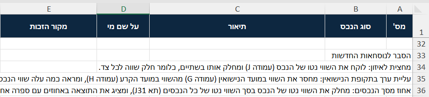
- 1השורה הזאת מכריזה על מה שבא אחריה: הסבר לנוסחאות החדשות. מתחתיה שלוש שורות, אחת לכל עמודה חדשה, בעברית ולא בלשון נוסחה. זה מה שאפשר לקרוא בקול בדיון.
- 2ובהסבר השלישי Claude נוקב בתא: J31. זה התא שעמודת האחוזים מחלקת בו, והוא מסכם עד שורה 28 בעוד הנכסים נמשכים עד שורה 29. כלומר ההסבר שביקשנו הוא זה שחשף את הפגם.
שורות ההסבר שנוספו מתחת לטבלה, והתא שאחת מהן נוקבת בו
התשובה ש-Claude החזיר, כפי שהופיעה בחלון הצ'אט
מה ש-Claude הוסיף בלי שביקשנו
Claude לא הסתפק בבניית העמודות. הוא דיווח מה בדק, ואז עצר והצביע על שני דברים שאיש לא ביקש ממנו למצוא.
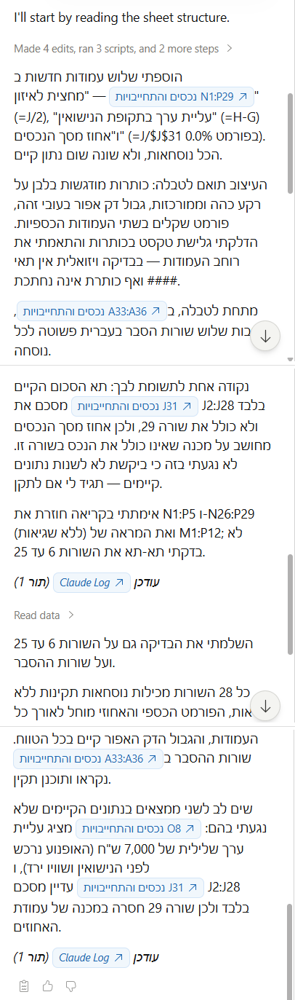
התשובה כולה. ארוכה, ואפשר לרוץ עליה, אבל הפסקה האחרונה שווה קריאה איטית: שם Claude מדווח על שני הממצאים שלא ביקשנו, האופנוע ושורת הסיכום שמחמיצה שורה
הראשון: האופנוע. בעמודת עליית הערך מופיע אצלו מינוס 7,000 ש"ח, ו-Claude טרח להסביר למה זה נכון ולא שגיאה: האופנוע נרכש לפני הנישואין ושוויו ירד מאז. עמודה שמראה ירידת ערך אינה תקלה, היא נתון.
והשני, החשוב מבין השניים: תא הסיכום שעמודת האחוזים נשענת עליו מסכם עד שורה 28, והנתונים נמשכים עד שורה 29. כלומר הפגם שפרומפט 1 מצא זולג עכשיו לתוך העמודה החדשה. Claude לא תיקן, כי הפרומפט אסר עליו לשנות נתונים קיימים, אבל Claude שאל אם לתקן.
איך בודקים
לחצו על תא אחד בכל עמודה וראו בשורת הנוסחאות שיש שם נוסחה ולא מספר.
ואז שנו שווי של נכס אחד בטבלה, וראו ששלוש העמודות מתעדכנות מיד. אם רק חלק התעדכן, יש שם מספרים קבועים.
וזו התשובה שקיבלנו כששאלנו. Claude נקב במספר, נקב בתא שממנו הוא בא, הצביע על השורה שנשארה בחוץ ועל סכומה, ואמר מה זה עושה לעמודת האחוזים.
התשובה ש-Claude החזיר, כפי שהופיעה בחלון הצ'אט
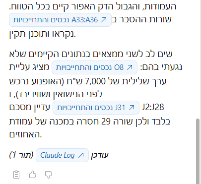
- 1קודם הוא מאשר שהעיצוב נעשה, וששורות ההסבר שמתחת לטבלה נקראות. ביקשנו את זה במפורש בפרומפט, ובלי הבקשה הזאת העמודות החדשות היו נראות כמו טלאי.
- 2ושני ממצאים שלא ביקשנו. הראשון, האופנוע מציג עליית ערך שלילית של 7,000 ש"ח, ו-Claude טרח להסביר שזה נכון ולא שגיאה: הוא נרכש לפני הנישואין ושוויו ירד. והשני החשוב, תא הסיכום שעמודת האחוזים נשענת עליו מסכם עד שורה 28 בעוד הנתונים נמשכים עד 29. כלומר הפגם שפרומפט 1 מצא זולג עכשיו לתוך העמודה החדשה.
התשובה על השאלה מאיזה תא הגיע המכנה, ושני ממצאים שלא ביקשנו
אם יצא לא נכון
אם Claude הדביק מספרים במקום נוסחאות, אמרו: "אני רוצה נוסחה שמתעדכנת לבד, לא מספרים קבועים."
06
פרומפט 5: איפה הסימון בטבלה לא תואם את החוק
המצב
בשורה אחת: סתירה אחת בעמודה קטנה יכולה לגרור חמישית מהתיק.
זה הפרומפט שבו הכלי מפסיק להיות עוזר טכני ומתחיל לתפוס דברים שאדם מפספס.
בקובץ יש לשונית "סיווג מקורות", שמפרטת לכל מקור זכות אם הוא נכלל באיזון ולפי איזה סעיף. ובטבלת הנכסים יש עמודה שבה מישהו סימן ידנית "כן" או "לא".
השאלה היא אם השניים מסכימים ביניהם.
הפרומפט
איזה תוצר Claude צפוי להחזיר
שתי עמודות חדשות, ושורה אחת בלבד צבועה. כשהרצנו את זה Claude מצא בדיוק סתירה אחת, ואפס התראות שווא בעשרים ושבע השורות האחרות.
התוצר ש-Claude החזיר לנו
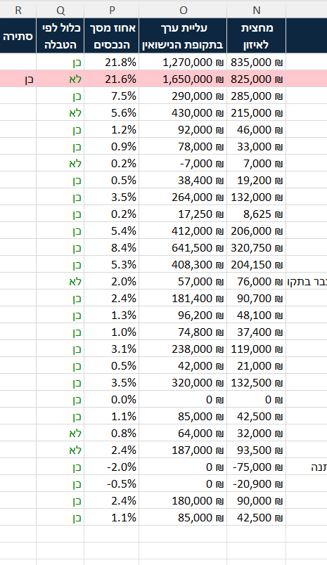
שתי העמודות החדשות: מה הטבלה מחזירה, והאם יש סתירה. שורה אחת בלבד נצבעה
ומי הנכס שנצבע. בלי הצד הזה של הטבלה רואים שורה אדומה ולא יודעים על מה מדובר.
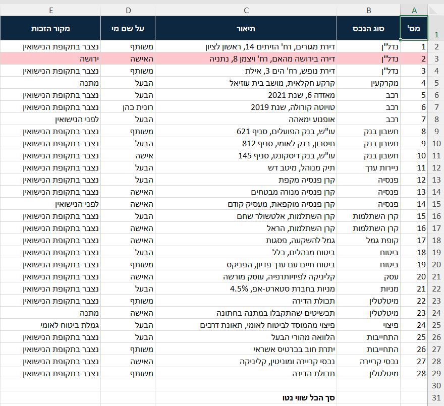
אותה שורה מהצד השני של הטבלה: הדירה שהתקבלה בירושה מהאם
התשובה ש-Claude החזיר, כפי שהופיעה בחלון הצ'אט
מה ש-Claude הוסיף בלי שביקשנו
Claude לא הסתפק בסימון.
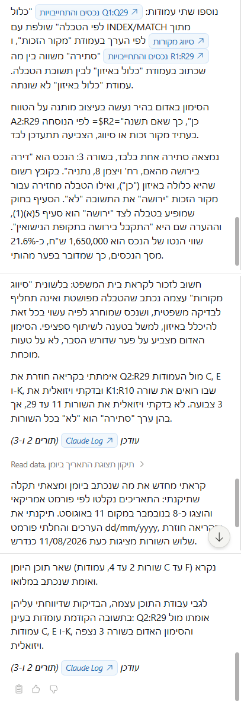
ומה שכדאי לחפש בה הוא הסוף, שבו Claude מצטט חזרה את שורת ההסתייגות שכתובה בלשונית "סיווג מקורות" עצמה" loading="lazy">הנוסחאות, העיצוב המותנה, הסתירה שנמצאה, המשמעות הכספית, וההסתייגות שנוספה
ראשית, Claude לא צבע ידנית, אלא בנה עיצוב מותנה על כל הטווח, עם נוסחה שבודקת את עמודת הסתירה. המשמעות: אם תשנו מקור זכות או תתקנו את טבלת הסיווג, הצביעה תתעדכן לבד, ולא תישאר צבועה שורה שכבר אינה סותרת.
שנית, Claude הוסיף את המשמעות הכספית. השורה הזאת שווה 1,650,000 ש"ח, שהם כ-21.6 אחוז ממסת הנכסים. סתירה אחת בעמודה קטנה, וחמישית מהתיק תלויה בה.
ושלישית, וזה מה שהכי חשוב: Claude קרא את שורת ההסתייגות שכתובה בלשונית "סיווג מקורות" עצמה, וציטט אותה חזרה. שהטבלה מפושטת, שנכס שמוחרג לפיה עשוי בכל זאת להיכלל בטענה לשיתוף ספציפי, ושהסימון האדום מצביע על פער שדורש הסבר ולא על טעות מוכחת.
איך בודקים
קחו שורה שנצבעה, ופתחו את לשונית "סיווג מקורות". ראו בעיניים מה כתוב שם מול מה שכתוב בטבלה. אם השניים באמת שונים, הסימון נכון.
ובדקו גם שורה שלא נצבעה, כדי לוודא ש-Claude לא צבע הכל או כלום.
אם יצא לא נכון
אם העמודה החדשה החזירה שגיאה בכל השורות, כנראה יש רווח מיותר או כתיב שונה בין שתי הלשוניות. אמרו: "התעלם מרווחים מיותרים בתחילת הערך ובסופו כשאתה מתאים בין הלשוניות."
07
פרומפט 6: מחשבון מועדים דיוניים
המצב
בשורה אחת: טעות בספירת ימים סביב פגרה עולה שבועות.
יש לכם רשימת החלטות, ולכל אחת מספר ימים להגשה. חלקן במניין ימים קלנדריים וחלקן בימי עבודה, ובאמצע נופלות פגרות בית המשפט.
לחשב את זה בעין זו עבודה מייגעת שקל לטעות בה, וטעות בה עולה ביוקר.
הפרומפט
איזה תוצר Claude צפוי להחזיר
שלוש עמודות מלאות, עם נוסחאות ולא עם תאריכים מוקלדים, ושורות צבועות באדום היכן שהמועד קרוב או חלף.
התוצר ש-Claude החזיר לנו
הלשונית אחרי החישוב: תאריך ההחלטה, הערכאה ונושא ההחלטה
לחיצה על התמונה מגדילה אותה ופותחת את מה שנשאר מחוץ למסגרת, עם אפשרות לגלול בתוכה לכל הכיוונים
והמשכה: המועד האחרון, הימים שנותרו והסטטוס הצבוע
לחיצה על התמונה מגדילה אותה ופותחת את מה שנשאר מחוץ למסגרת, עם אפשרות לגלול בתוכה לכל הכיוונים
ותסתכלו על השורה הרביעית. החלטה מ-27 ביולי עם שבעה ימי עבודה להגשה, והמועד האחרון יצא 14 בספטמבר. כי פגרת הקיץ, מ-21 ביולי עד 5 בספטמבר, הוחרגה במלואה. חודש וחצי הפרש בין חישוב שמכיר את הפגרות לחישוב שלא.
עמודת עזר ש-Claude בנה לבד
כדי להחריג את ימי הפגרה הוא פורס את שש התקופות ל-126 תאריכים בודדים בעמודה נפרדת, וכל אחד מהם מקושר בנוסחה לטבלת הפגרות. כלומר אם תשנו תאריך בטבלה, כל המועדים יתעדכנו.
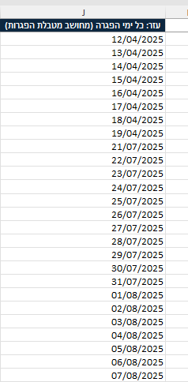
ראש עמודת העזר: ימי הפגרה, פרוסים אחד אחד ומקושרים לטבלה
וההסבר שלו למה דווקא כך: "כדי שאפשר יהיה להראות בבית משפט בדיוק אילו ימים הוחרגו."
התשובה ש-Claude החזיר, כפי שהופיעה בחלון הצ'אט
מה נעשה, ואיפה Claude עצר ושאל
התשובה כאן ארוכה, והחלק השני שלה הוא הסיבה שהפרומפט הזה נמצא בסדרה. Claude לא רק חישב. הוא מנה שלוש הכרעות שהיה צריך לקבל בדרך, אמר מה בחר בכל אחת, והשאיר אותן פתוחות לשינוי.
- 1ותסתכלו למה Claude בנה לשונית עזר ולא הסתפק בנוסחה: כדי שהחישוב יהיה שקוף. הוא פרס את שש תקופות הפגרה לתאריכים בודדים, כל אחד בשורה, וקישר אותם בנוסחה לטבלת הפגרות. הנימוק שהוא נותן הוא שאפשר להראות בבית משפט בדיוק אילו ימים הוחרגו.
- 2וכל עשר השורות יצאו "עבר המועד", כולן באדום. המועד המאוחר מביניהן הוא מרץ 2026, והחישוב נעשה באוגוסט 2026. כלומר התוצאה נכונה, והיא נראית דרסטית רק בגלל התאריכים שבקובץ התרגול.
החלק הראשון: למה נבנתה לשונית עזר, ולמה כל השורות יצאו באדום
לחיצה על התמונה מגדילה אותה ופותחת את מה שנשאר מחוץ למסגרת, עם אפשרות לגלול בתוכה לכל הכיוונים
שלוש הכרעות פרשניות שהוא מחזיר אליכם
וזה החלק שקוראים לאט. כל אחת מהשלוש היא בחירה שמשנה תוצאה, ולא שאלה טכנית.
- 1וזו ההצהרה: שלוש נקודות שהוא לא היה בטוח בהן. הן כתובות ברצף אחד מתחתיה, ולכן אין כאן שלוש מסגרות. הנה הן, בסדר שבו הוא כתב אותן.
ההצהרה, ומתחתיה שלוש ההכרעות ברצף אחד
לחיצה על התמונה מגדילה אותה ופותחת את מה שנשאר מחוץ למסגרת, עם אפשרות לגלול בתוכה לכל הכיוונים
- מועד שנופל בשישי, בשבת או ביום פגרה לא הוזז ליום העבודה הבא. בספירה קלנדרית התוצאה עלולה ליפול על יום מנוחה. בקובץ הזה זה לא קרה בפועל, ו-Claude מציע להוסיף את הדחייה אם תבקשו. זו הכרעה שלכם, לא שלו.
- מה זה "לא לספור ימים בתוך פגרה". הוא בחר להחריג את ימי הפגרה מהמניין לגמרי, ולא להשעות את המניין עד תום הפגרה. הוא אומר בעצמו ששתי הפרשנויות מקובלות, ושלפעמים הן מגיעות לאותה תוצאה ולפעמים לא.
- "פחות משבעה ימי עבודה" יושם כקטן משבע, וספירת ימי העבודה שנותרו אינה כוללת את היום עצמו. אם אצלכם סופרים אחרת, זה מקום אחד לשנות.
ההסתייגות שהוא מוסיף מעצמו, ומה שלא בדק
- 1ואת ההסתייגות החשובה Claude כותב בעצמו: טבלת הפגרות בקובץ מסומנת כדוגמה לתרגול, ותאריכי פגרות הפסח והסוכות נגזרו מהלוח העברי. הוא אומר במפורש שלפני שימוש אמיתי כדאי לאמת אותם מול תקנות בתי המשפט. זו אותה הסתייגות שאנחנו חוזרים עליה מיד למטה.
- 2ובסוף, מה הוא בדק ומה לא. את לשונית 126 ימי הפגרה הוא בדק בשלוש נקודות ביקורת בלבד: תחילת הפגרה הראשונה, תחילת פגרת הקיץ, והתאריך האחרון. הוא לא עבר אחד אחד על כל 126 השורות, והוא אומר זאת במילים שלו.
הסיום: ההסתייגות על תאריכי הפגרות, ומה שנבדק בשלוש נקודות בלבד
לחיצה על התמונה מגדילה אותה ופותחת את מה שנשאר מחוץ למסגרת, עם אפשרות לגלול בתוכה לכל הכיוונים
איך בודקים
קחו שורה אחת וספרו ידנית. מתאריך ההחלטה, מספר הימים שכתוב, בלי שישי ושבת אם זה ימי עבודה, ובלי הימים שנופלים בתוך פגרה.
ובדקו במיוחד שורה שהמועד שלה נופל בתוך פגרת הקיץ, כי שם ההפרש בין חישוב נכון ללא נכון הוא של שבועות.
אם יצא לא נכון
אם Claude התעלם מהפגרות, הפנו אותו לטווח המדויק: "טבלת הפגרות נמצאת בתחתית אותה לשונית, מתחת לכותרת פגרות בתי המשפט. השתמש בטווחים שבה."
08
פרומפט 7: כמה הוציא כל הורה, על מה, ועל איזה ילד
המצב
בשורה אחת: ובלי לכתוב אף נוסחה ביד.
בתיק מזונות או במחלוקת על השתתפות בהוצאות, השאלה תמיד אותה שאלה: כמה הוציא כל צד, על מה, ועל איזה ילד.
הלשונית "הוצאות מעבר למזונות" מרכזת את ההוצאות שיש להן אסמכתה ושנחלקות בין ההורים. לכל שורה בה יש גם סיווג: הכרחית, שאינה הכרחית או חריגה, וזה הסיווג שקובע בפועל מי נושא בהוצאה ובאיזה יחס.
בלשונית שישים ואחת שורות. הפרומפט הזה מלמד את משפחת הנוסחאות שמסכמת לפי תנאי, וזו הנוסחה השימושית ביותר שיש אחרי סכום פשוט.
ראש לשונית "הוצאות מעבר למזונות", שעליה נעבוד. משמאל לתיאור יש עוד שלוש עמודות: מי שילם, יש קבלה, והוחזר
לחיצה על התמונה מגדילה אותה ופותחת את מה שנשאר מחוץ למסגרת, עם אפשרות לגלול בתוכה לכל הכיוונים
- 1וזה ההמשך שמאלה של אותה לשונית "הוצאות מעבר למזונות". שורה 10, ותסתכלו על התאריך שלה בצילום שלמעלה: הוא צמוד לשמאל ולא לימין, וזה סימן שהוא שמור כטקסט.
- 2ועמודת הסכום, שהיא זו שנסכם בפרומפט. כל הסכומים מיושרים לימין עם סימן שקל, חוץ משניים. אלה שני התאים שיישארו מחוץ לכל חישוב.
ההמשך שמאלה: התיאור, הסכום, מי שילם, ואם יש קבלה
לחיצה על התמונה מגדילה אותה ופותחת את מה שנשאר מחוץ למסגרת, עם אפשרות לגלול בתוכה לכל הכיוונים
ושימו לב לשתי שורות שנראות תקינות לגמרי. התאריך בשורה 10 והסכום בשורה 30 מיושרים אחרת מהשכנים שלהם, וזה כל ההבדל בין מספר לבין טקסט שנראה כמו מספר.
ומה זה עושה: נוסחה שמסכמת לפי תנאי פשוט מדלגת על תא כזה. היא לא מחזירה שגיאה ולא מסמנת כלום, אלא מחזירה סכום נמוך יותר שנראה סביר לחלוטין. בלשונית הזאת מדובר ב-4,088 ש"ח שנעלמים, וזאת הסיבה שהפרומפט שלמטה מבקש לספור שורות ולא רק לחבר סכומים.
הפרומפט
איזה תוצר Claude צפוי להחזיר
לשונית חדשה עם חמש טבלאות, וכל מספר בהן נוסחה. ומתחת לכל טבלה שורת הסבר.
התוצר ש-Claude החזיר לנו
שלוש הטבלאות הראשונות: לפי ילד, לפי סיווג משפטי, ולפי קטגוריה. שורת ההסבר מתחת לכל אחת ממשיכה שמאלה מעבר למסגרת
לחיצה על התמונה מגדילה אותה ופותחת את מה שנשאר מחוץ למסגרת, עם אפשרות לגלול בתוכה לכל הכיוונים
ומה שיש לכם עכשיו הוא תשובה לשאלה שנשאלת בכל תיק מזונות: כמה הוציא כל צד, על מה, ועל איזה ילד.
ויש כאן בונוס. שלוש הטבלאות חותכות את אותם נתונים בשלוש דרכים שונות, ושלושתן חייבות להסתכם באותו מספר. אצלנו כולן הגיעו ל-30,389 ש"ח. אם אחת מהן הייתה יוצאת אחרת, היה שם באג.
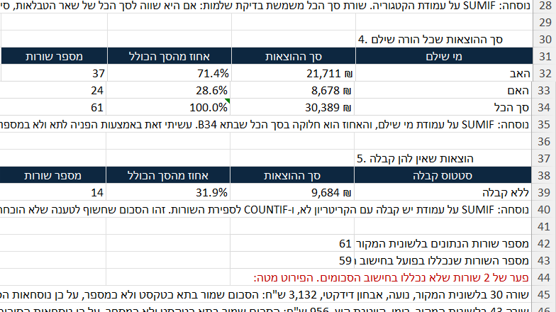
ומתחתן שתי שורות שהן העיקר בכל התרגיל: כמה שורות יש בלשונית, וכמה מהן נכללו בפועל בחישוב" loading="lazy">שתי הטבלאות האחרונות, ומתחתן שתי שורות הספירה שהן העיקר
ושתי השורות שבתחתית הן הסיבה שהפרומפט הזה נראה כמו שהוא נראה. בלשונית שישים ואחת שורות נתונים, ובחישוב נכללות חמישים ותשע. שתי שורות נשארות בחוץ מפני שהסכום בהן שמור כטקסט ולא כמספר, והנוסחאות המותנות פשוט מדלגות עליהן בלי להתריע.
Claude לא הסתפק במספר, אלא נקב בשתי השורות בשמן: שורה 30, אבחון דידקטי של נועה בסך 3,132 ש"ח, ושורה 43, קייטנת קיץ של רומי בסך 956 ש"ח. יחד 4,088 ש"ח שנעלמו מכל חמש הטבלאות בבת אחת.
התשובה ש-Claude החזיר, כפי שהופיעה בחלון הצ'אט
מה ש-Claude הוסיף בלי שביקשנו
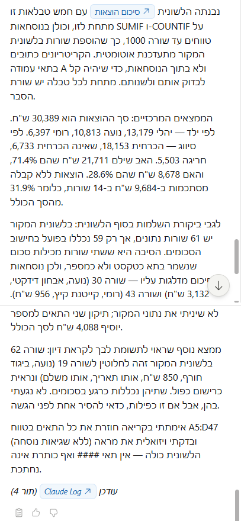
ושתי השורות שהכי חשוב למצוא בה הן שורות הספירה שבסוף: שישים ואחת שורות בלשונית, חמישים ותשע בחישוב" loading="lazy">הנוסחאות, הממצאים, פער הספירה, והכפילות שנמצאה בדרך
בלשונית "סיכום הוצאות" ש-Claude בנה, הוא עשה שלושה דברים שלא ביקשנו ממנו בפרומפט. כל אחד מהם משנה משהו בקובץ.
הראשון, הגנה על העתיד. הנוסחאות נכתבו עד שורה 1000 ולא עד השורה האחרונה, כדי שהוספת שורות חדשות תתעדכן לבד. ו-Claude כתב את זה בשורה בראש הלשונית, כדי שמי שיפתח אותה בעוד חצי שנה ידע.
השני, עמודת "מספר שורות" שנוספה לכל טבלה. לא ביקשנו. ובזכותה רואים מיד ש-61 שורות נספרו אבל רק חלקן חוברו, וזה בדיוק מה שחשף את הפער.
והשלישי, שאפילו אני לא ציפיתי לו בפרומפט הזה: הוא הבחין ששורה 62 בלשונית המקור זהה לחלוטין לשורה 19. אותו ילד, אותו סכום, אותו תאריך, אותה אסמכתה. הוא אמר ששתיהן נספרות כרגע, שלא נגע בהן, ושאם זו כפילות כדאי להסיר אחת לפני הגשה.
איך בודקים
הוסיפו שורת הוצאה חדשה בסוף לשונית ההוצאות, וחזרו לסיכום. אם המספרים התעדכנו לבד, הנוסחאות נכונות. אם לא, יש שם ערכים קבועים.
ובדקו שסך ההוצאות של שני ההורים ביחד שווה לסך הכולל. אם לא, יש שורות שנפלו בין הכיסאות.
אם יצא לא נכון
אם הסכומים לא מתאימים, ייתכן שיש בקובץ סכומים ששמורים כטקסט ולכן לא נספרו. אמרו לו: "תבדוק אם יש בעמודת הסכום תאים ששמורים כטקסט, ותגיד לי אילו."
09
פרומפט 8: לראות את אותם נתונים בשני חתכים בבת אחת
המצב
בשורה אחת: וכך רואים מי נושא בעיקר הנטל, ובאיזה סוג הוצאה בדיוק.
טבלת ציר היא הכלי שנחשב "רק למי שעשה קורס Excel". היא לוקחת רשימה ארוכה ומסדרת אותה בשני צירים, כדי לראות חתך שאי אפשר לראות ברשימה.
בפרומפט הזה נבנה טבלת ציר על לשונית "הוצאות מעבר למזונות". הסיווג המשפטי והקטגוריה יופיעו בשורות, וההורה ששילם בעמודות. וכך רואים מיד מי נושא בעיקר הנטל, ובאיזה סוג הוצאה בדיוק.
הפרומפט
איזה תוצר Claude צפוי להחזיר
טבלת ציר אמיתית, עם שורת וטור סך הכל, ושתי שורות מסקנה מתחתיה.
התוצר ש-Claude החזיר לנו
- 1חריגה, ובתוכה חינוך, מציגה אפס. ולא מפני שלא היו הוצאות חינוך חריגות. הסכום היחיד בקטגוריה הזאת שמור בקובץ כטקסט, וטבלת ציר אינה סופרת טקסט. זו אותה הוצאה מפרומפט 7, האבחון הדידקטי בסך 3,132 ש"ח.
- 2והשורה התחתונה היא ההצלבה. 21,711 ו-8,678, בדיוק אותם מספרים שהתקבלו בפרומפט 7 בדרך חישוב אחרת לגמרי.
טבלת הציר: הסיווג ומתחתיו הקטגוריה בשורות, שני ההורים בעמודות
לחיצה על התמונה מגדילה אותה ופותחת את מה שנשאר מחוץ למסגרת, עם אפשרות לגלול בתוכה לכל הכיוונים
וההצלבה הראשונה שעושים היא לפרומפט הקודם. הסך הכללי כאן הוא 30,389 ש"ח, האב 21,711 והאם 8,678. אותם מספרים בדיוק שיצאו בפרומפט 7, בדרך חישוב אחרת לגמרי. שתי שיטות שמגיעות לאותה תוצאה הן הסימן הטוב ביותר שאין באג באף אחת מהן.
ומתחת לטבלה Claude בנה טבלה שנייה שלא ביקשנו במפורש: הפער בין ההורים בכל סיווג, ומי הגדול ביותר.
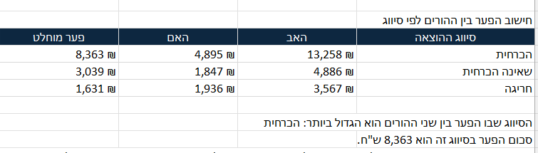
טבלת הפערים והמסקנה: הפער הגדול ביותר הוא בצרכים ההכרחיים, 8,363 ש"ח
התשובה ש-Claude החזיר, כפי שהופיעה בחלון הצ'אט
מה ש-Claude הוסיף בלי שביקשנו
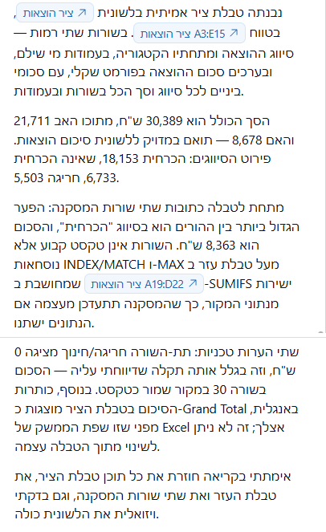
וההערה שכדאי לחפש היא זו על תת-השורה שמציגה אפס, כי היא מסבירה למה סכום שקיים בקובץ לא הגיע לטבלה" loading="lazy">המבנה, הסכומים, המסקנה, ושתי הערות טכניות בסוף
ההערה הראשונה שלו היא כל התרגיל, והיא על תת-שורה אחת בטבלת הציר. בטבלה יש תת-שורה אחת שמציגה אפס: חריגה, ובתוכה חינוך. וזה לא אומר שלא היו הוצאות חינוך חריגות. זו בדיוק ההוצאה מפרומפט 7, האבחון הדידקטי בסך 3,132 ש"ח, ומפני שהסכום שמור כטקסט טבלת הציר לא ראתה אותו והתת-קטגוריה כולה התאפסה.
שימו לב מה קרה כאן. בפרומפט 7 הפגם הופיע כפער בין שני מספרים, וצריך היה לחפש אותו. כאן הוא הופיע כשורה שכתוב בה אפס, ואפס נראה כמו עובדה. מי שיסתכל על הטבלה בלי לדעת יאמר שלא היו הוצאות חינוך חריגות.
והשנייה, טכנית ולא ניתנת לתיקון מתוך הגיליון: הכיתוב Grand Total מופיע באנגלית. Excel לוקח אותו משפת הממשק ולא משפת הקובץ, והוא אמר את זה במפורש במקום לנסות ולהיכשל. אם הכיתוב באנגלית מפריע, אפשר להקליד עליו ידנית בעברית אחרי שהטבלה נבנתה.
איך בודקים
קחו תא אחד באמצע הטבלה ולחצו עליו פעמיים. בטבלת ציר אמיתית זה פותח לשונית חדשה עם כל השורות שהרכיבו את המספר. אם לא קרה כלום, זו טבלה רגילה ולא טבלת ציר.
והשוו את הסך הכולל למספר שקיבלתם בפרומפט 7. הם חייבים להיות זהים.
אם יצא לא נכון
אם Claude בנה טבלה רגילה במקום טבלת ציר, זה בסדר והתוצאה שימושית באותה מידה. אם בכל זאת חשוב לכם, בקשו: "תבנה טבלת ציר אמיתית, לא טבלת סיכום עם נוסחאות."
10
פרומפט 9: כמה שווה היום סכום שישולם בעתיד
המצב
בשורה אחת: כדי להיכנס למשא ומתן על פריסה עם מספר, ולא עם תחושה.
הצדדים הסכימו על תשלומי איזון לשיעורין: שנים עשר תשלומים של 45,000 ש"ח, פרוסים על שנה.
וכאן נכנסת שאלה שכל מי שניהל משא ומתן על פריסה מכיר. הצד שמקבל את הכסף בפריסה מקבל פחות ממי שמקבל אותו עכשיו, כי כסף שמגיע בעוד שנה שווה פחות מכסף שמגיע היום. השאלה היא כמה פחות.
ולזה קוראים היוון. מי שיודע לחשב את זה נכנס למשא ומתן עם מספר, ולא עם תחושה.
לוח התשלומים כפי שהוא מגיע. מימין למועד יש עמודה נוספת עם מספר התשלום, אחד עד שנים עשר
לחיצה על התמונה מגדילה אותה ופותחת את מה שנשאר מחוץ למסגרת, עם אפשרות לגלול בתוכה לכל הכיוונים
ובלוח הזה יש ארבעה מצבים שונים, ושווה לזהות אותם עכשיו כי פרומפט 10 יבקש לחשב אותם. תשלום ששולם במועד, תשלום שאיחר, תשלום שאיחר וגם שולם חלקית, 30,000 במקום 45,000, ותשלומים שמועדם עוד לא הגיע.
ויש שם גם מלכודת. עמודת הסטטוס מולאה ידנית פעם אחת ולא עודכנה מאז, ולכן ייתכן שיש בה שורה שכתוב בה "טרם הגיע מועד" והמועד שלה כבר חלף. זה בדיוק מה שקורה בלוח שמישהו מנהל ביד.
הפרומפט
איזה תוצר Claude צפוי להחזיר
תא אחד לשיעור ההיוון, ערך נוכחי מחושב, ההפרש מהסכום הנומינלי, וטבלת רגישות קטנה בשלושה שיעורים.
התוצר ש-Claude החזיר לנו
תא שיעור ההיוון, מסומן בצהוב, ולצידו מועד החישוב. כל השאר נגזר משניהם
לחיצה על התמונה מגדילה אותה ופותחת את מה שנשאר מחוץ למסגרת, עם אפשרות לגלול בתוכה לכל הכיוונים
שימו לב ש-Claude לא הסתפק בתא אחד, אלא הוסיף גם תא למועד החישוב, כי ערך נוכחי בלי לומר ליום מי הוא חסר משמעות.
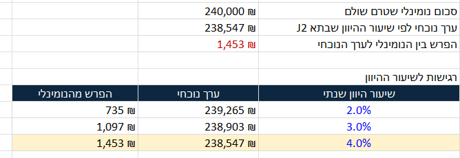
הסיכום וטבלת הרגישות: ככל שהשיעור עולה הערך הנוכחי יורד
התשובה ש-Claude החזיר, כפי שהופיעה בחלון הצ'אט
מה ש-Claude הוסיף בלי שביקשנו
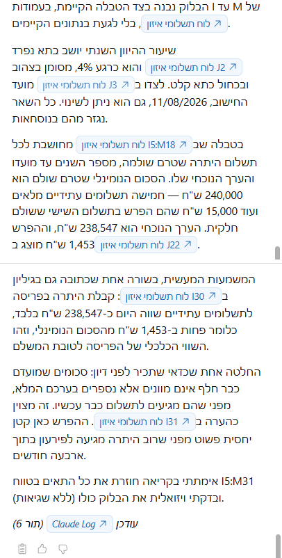
והחלק שאין לדלג עליו הוא שלוש ההכרעות ש-Claude קיבל לבד, שמפורטות מיד מתחת לצילום הזה" loading="lazy">המבנה, המספרים, המשמעות המעשית, וההחלטה ש-Claude קיבל לבד
בלשונית "לוח תשלומי איזון" Claude לא רק חישב. הוא הכריע בשלוש שאלות שהפרומפט לא ענה עליהן, ואמר לנו מה הכריע בכל אחת. אלה הכרעות שאדם היה צריך לקבל, ולכן כדאי לקרוא אותן ולא רק את המספרים.
הראשון, מה נחשב "טרם שולם". חמישה תשלומים מלאים לא שולמו, וזה 225,000 ש"ח. אבל יש גם תשלום שישי שבו שולמו 30,000 מתוך 45,000, ו-Claude צירף את היתרה של 15,000 והגיע ל-240,000. הפרומפט לא אמר לו לעשות את זה.
השני, ומי שמחשב היוון ביד נופל בו: תשלום אחד בלוח כבר עבר מועדו ולא שולם. Claude לא היוון אותו, אלא ספר אותו בערכו המלא, כי חוב שהיה אמור להיפרע כבר אינו תשלום עתידי. ו-Claude כתב את ההחלטה הזאת כהערה בגיליון, לא רק בשיחה.
והשלישי הוא ההסבר להפרש. ההפרש כאן הוא 1,453 ש"ח בלבד, פחות מאחוז, ו-Claude טרח להסביר למה: רוב היתרה מגיעה לפירעון בתוך ארבעה חודשים. היוון על טווח קצר כמעט אינו משנה, וזה בדיוק המספר שכדאי להכיר לפני שנכנסים למשא ומתן על פריסה.
איך בודקים
שנו את תא שיעור ההיוון מ-4 ל-8. הערך הנוכחי חייב לרדת. אם הערך הנוכחי לא זז, יש שם מספר קבוע ולא נוסחה.
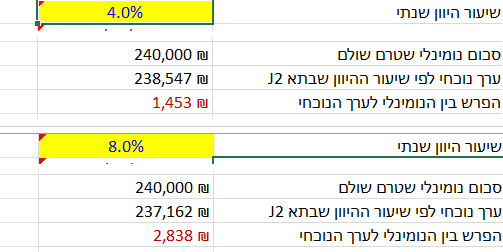
אותו אזור בדיוק, פעם בארבעה אחוזים ופעם בשמונה. מספר אחד שונה, וכל השאר נגזר ממנו
אצלנו הערך הנוכחי ירד מ-238,547 ל-237,162, וההפרש קפץ מ-1,453 ל-2,838. שינוי בתא אחד, ושתים עשרה שורות התעדכנו.
ושימו לב לדבר שקל לפספס: גם משפט הסיכום בעברית שמתחת לחישוב התעדכן. Claude לא הקליד את המספרים לתוך המשפט, Claude בנה את המשפט בנוסחה שמושכת אותם. כלומר גם ההסבר לא מתיישן כשמשנים הנחה.
ומה שלא זז, ובצדק: טבלת הרגישות. היא מציגה שני, שלושה וארבעה אחוזים בקביעות, והיא אינה אמורה לרוץ אחרי התא הראשי. אם גם היא הייתה משתנה, זו הייתה תקלה.
והיגיון פשוט שסוגר את הבדיקה: הערך הנוכחי תמיד נמוך מהסכום הנומינלי. אם יצא גבוה ממנו, משהו הפוך.
אם יצא לא נכון
אם Claude היוון גם תשלומים ששולמו כבר, אמרו: "תכלול בחישוב רק שורות שעמודת הסכום ששולם בהן ריקה."
11
פרומפט 10: כמה עוד חייבים, ומי בפיגור
המצב
בשורה אחת: והלוח מתעדכן לבד, ולא מתיישן ברגע שמישהו שילם באיחור.
לוח תשלומים שאתם מנהלים ביד מתיישן ברגע שמישהו משלם באיחור. אתם רוצים לוח שמתעדכן לבד: כמה נשאר, מי איחר, וכמה ימי איחור הצטברו.
הפרומפט
איזה תוצר Claude צפוי להחזיר
יתרה שיורדת משורה לשורה, סטטוס מחושב, רשימה נפתחת בעמודת הסטטוס, ושורות צבועות באדום.
התוצר ש-Claude החזיר לנו
הלוח אחרי החישוב. שלוש שורות אדומות, והיתרה נעצרת על 240,000
לחיצה על התמונה מגדילה אותה ופותחת את מה שנשאר מחוץ למסגרת, עם אפשרות לגלול בתוכה לכל הכיוונים
ומה שיש לכם עכשיו הוא תשובה לשאלה שלקוח שואל בטלפון: כמה הוא עוד חייב, ומאיזה תשלום הוא בפיגור. 240,000 ש"ח, ומאוגוסט והלאה.
ואת זה רואים בעין, בלי לקרוא מספר אחד. שלוש השורות האדומות הן כל מה שצריך להסתכל עליו: שתיים ששולמו באיחור, ואחת שהמועד שלה עבר ולא שולמה. השאר לבן, כלומר בסדר.
מי שכן רוצה את המכניקה: היתרה בעמודה F יורדת בכל שורה בסכום שבאמת שולם, ולכן כשמישהו שילם חלקית היא יורדת פחות, וכשהפסיקו לשלם היא נעצרת. אבל אין צורך לעקוב אחריה, כי הצבע כבר אמר את זה.
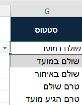
הרשימה הנפתחת בתא הסטטוס, עם ארבע האפשרויות
והרשימה הנפתחת היא הבדיקה הכי מהירה שיש. לוחצים על תא בעמודת הסטטוס, ואם נפתח חץ עם ארבע האפשרויות, החלק הזה של הבקשה בוצע.
איך בודקים
היתרה בשורה האחרונה חייבת להיות שווה לסך הכל פחות מה ששולם. חשבו את זה בראש ובדקו.
ולחצו על תא בעמודת הסטטוס וראו שנפתח חץ עם ארבע האפשרויות. אם אין חץ, הרשימה הנפתחת לא נוצרה.
אם יצא לא נכון
אם הסטטוס נכתב כטקסט קבוע במקום נוסחה, אמרו: "הסטטוס צריך להתעדכן לבד כשאני משנה תאריך תשלום, ולא להיות טקסט מוקלד."
12
פרומפט 11: לחלץ טבלה מ-PDF ולהשוות אותה לקובץ
המצב
בשורה אחת: תדפיס הבנק הוא הראיה, והגיליון הוא רק הקלדה שלו.
הצד השני הגיש תדפיס בנק כקובץ PDF, והלקוח שלכם הקליד את התנועות לגיליון Excel.
ושימו לב מה בדיוק המצב כאן, כי זה לא מצב של שתי גרסאות שמתחרות. התדפיס הוא מסמך שהבנק הפיק, Excel הוא הקלדה שלו בידי אדם. אין ביניהם ויכוח: לתדפיס יש מעמד, ולהקלדה אין.
ולכן השאלה אינה מי מהשניים צודק, אלא האם ההקלדה נאמנה למקור. כל פער שיימצא הוא טעות הקלדה, השמטה או שינוי, ולא מחלוקת. וזה בדיוק מה שרוצים לדעת לפני שמסתמכים על הגיליון בהליך.
זה הפרומפט היחיד שדורש את הקובץ השני שהורדתם.
ראש התדפיס, שהוא המקור המחייב: שם הבנק, מספר החשבון, התקופה שהתדפיס מכסה, מועד ההפקה ויתרת הפתיחה
לחיצה על התמונה מגדילה אותה ופותחת את מה שנשאר מחוץ למסגרת, עם אפשרות לגלול בתוכה לכל הכיוונים
ובראש התדפיס שלמעלה יש שורה אחת שכדאי לעצור עליה: "התקופה: 01/01/2024 עד 31/05/2024". זו התקופה היחידה שהתדפיס מכסה, וכל מה שקרה בחשבון לפני או אחרי פשוט אינו בו.
ובגיליון, כפי שרואים בצילום הבא, ההקלדה מתחילה ב-5 באוקטובר 2023, שלושה חודשים לפני שהתדפיס בכלל מתחיל.
ולכן כל תנועה בגיליון מלפני ינואר 2024 אינה פער. היא פשוט מחוץ למה שהתדפיס מראה. ובלי שנאמר את זה בפרומפט במפורש, כל אותן שורות היו מדווחות כתנועות שחסרות בתדפיס, והמספר שהיה חוזר היה שגוי לגמרי.
ומול זה, ההקלדה בגיליון. אותן עמודות בדיוק, אבל היא מתחילה באוקטובר 2023, כלומר מוקדם יותר מהתדפיס
לחיצה על התמונה מגדילה אותה ופותחת את מה שנשאר מחוץ למסגרת, עם אפשרות לגלול בתוכה לכל הכיוונים
הפרומפט
לפני שמדביקים: לחצו על כפתור הפלוס שמתחת לשורת הכתיבה בסרגל, וצרפו את קובץ תדפיס הבנק.
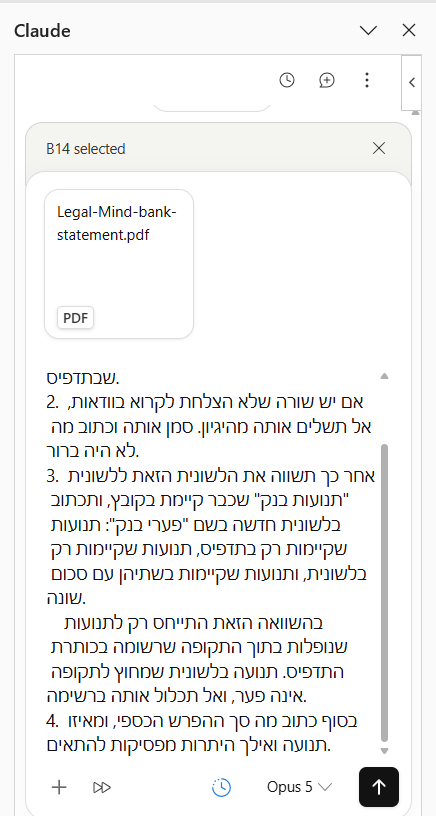
- 1כפתור הפלוס. לוחצים עליו, נפתח חלון בחירת קובץ, ובוחרים את תדפיס הבנק מהמקום שאליו הורדתם אותו.
- 2הקובץ אחרי שצורף. כרטיס עם שם הקובץ וסימון PDF, בראש התיבה ומעל טקסט הבקשה. אם הכרטיס הזה אינו מופיע, הקובץ לא נקלט, ואין טעם לשלוח את הבקשה.
הקובץ מצורף לפני השליחה, ורואים אותו בראש התיבה
ושימו לב לדבר קטן בצילום שקל לפספס. למעלה כתוב B14 selected. זה התא שהיה מסומן בגיליון באותו רגע, והסרגל מציג אותו תמיד. אין לזה קשר לבקשה, וזה לא משפיע עליה.
איזה תוצר Claude צפוי להחזיר
שתי לשוניות חדשות, ובלשונית הפערים שלושה ממצאים: שתי תנועות שקיימות בתדפיס ולא בקובץ, ותנועה אחת שסכומה שונה בין השניים.
התוצר ש-Claude החזיר לנו
- 1שתי תנועות שקיימות בתדפיס ואינן בקובץ. העברה לחשבון פרטי ב-8 בפברואר על 6,300 ש"ח, ומשיכת מזומן ב-21 במרץ על 4,200. לכל אחת הוא ציין את מספר האסמכתא, כדי שאפשר יהיה למצוא אותה בתדפיס.
- 2ואפס תנועות בכיוון ההפוך. Claude כתב במפורש שכל 31 התנועות שבתוך התקופה מופיעות בשני המקורות, ושהתנועות מאוקטובר עד דצמבר אינן פער אלא מחוץ לתקופת התדפיס.
- 3ותנועה אחת עם סכום שונה. כרטיס אשראי ב-20 בינואר, אותה אסמכתא בשני המקורות. בתדפיס 5,489 ש"ח, ובלשונית 4,089, הפרש של 1,400. שתי העמודות שמראות את ההפרש נשארו מחוץ למסגרת, ולחיצה על התמונה פותחת אותן.
שלושת סוגי הפער, כל אחד בטבלה נפרדת
לחיצה על התמונה מגדילה אותה ופותחת את מה שנשאר מחוץ למסגרת, עם אפשרות לגלול בתוכה לכל הכיוונים
וזה הצד השמאלי של אותה לשונית "פערי בנק", שבו יושבים הסכומים.
- 1סך ההפרש: 11,900 ש"ח. עשרת אלפים וחמש מאות מהתנועות החסרות, ואלף וארבע מאות מההפרש בסכום.
- 2וההצלבה שלא ביקשנו. Claude לקח את יתרת הסגירה בתדפיס, 13,706, את יתרת הסגירה בלשונית, 1,806, וחיסר. ההפרש יצא בדיוק 11,900. שתי דרכים שונות לגמרי לאותו מספר, וזו הבדיקה שהייתם עושים ביד.
הסיכום הכספי, ובתחתיתו הצלבה שלא ביקשנו
לחיצה על התמונה מגדילה אותה ופותחת את מה שנשאר מחוץ למסגרת, עם אפשרות לגלול בתוכה לכל הכיוונים
ושורה שמציינת מאיזו נקודה ואילך היתרות מפסיקות להתאים. זו השורה החשובה, כי היא מצביעה על הרגע שבו ההקלדה הידנית התנתקה מהמציאות.
התשובה ש-Claude החזיר, כפי שהופיעה בחלון הצ'אט
מה ש-Claude הוסיף בלי שביקשנו
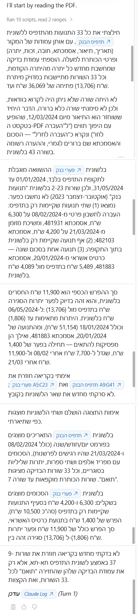
השורה שהכי חשוב למצוא בה היא זו שמציינת מאיזו נקודה ואילך היתרות מפסיקות להתאים, כי שם ההקלדה התנתקה מהתדפיס" loading="lazy">החילוץ, ההשוואה, ההצלבה, והשורה שלא נקראה בוודאות
והממצא שלא שתלנו. בתיאור של 12 במרץ, "העברה לחו"ל", הגרשיים בתוך המילה גרמו להיפוך תווים בחילוץ מה-PDF. Claude זיהה את זה, הבין מה המילה, ורשם הערה בלשונית במקום לתקן בשקט.
זה בדיוק המקום שבו חילוץ עברית מ-PDF נשבר, וזה קורה הרבה. גרשיים בתוך מילה, מרכאות בשם חברה, ראשי תיבות. מי שמחלץ טבלה מ-PDF בעברית צריך לעבור על עמודת התיאורים בעיניים, תמיד.
איך בודקים
פתחו את קובץ ה-PDF לצד הלשונית שנוצרה, וספרו את מספר התנועות בשניהם. אם הוא החסיר שורה בחילוץ, כל ההשוואה אחריה חסרת ערך.
ובדקו תנועה אחת שהוא סימן כפער, מול התדפיס עצמו.
אם יצא לא נכון
אם החילוץ יצא חלקי, אמרו: "תחלץ את כל השורות בתדפיס, כולל אלה שבעמוד השני, ותגיד לי כמה שורות חילצת."
13
פרומפט 12: להפוך טבלה לפסקה בכתב טענות
המצב
בשורה אחת: מה שנחסך כאן הוא ההקלדה, לא החשיבה.
יש לכם טבלה מסודרת. ומה שצריך להגיש זה פסקה בעברית משפטית.
זה הפרומפט שסוגר את המעגל: הנתונים שניקיתם, השוויתם וסימנתם הופכים לטקסט שאפשר להעתיק לכתב טענות.
הפרומפט
איזה תוצר Claude צפוי להחזיר
פסקה רצה, לא רשימה, שמפרטת את הנכסים החיצוניים עם השווי, המקור ומספר הנספח, ובסופה סכום כולל.
אצלנו נכנסו לפסקה שישה נכסים, והסכום הכולל יצא 2,497,000 ש"ח. ומתחת לפסקה Claude בנה, בלי שביקשנו, טבלת מקור שמקושרת בנוסחאות ללשונית הנכסים, כדי שאפשר יהיה לאמת כל נתון בפסקה מול מקורו.
וזו הפסקה שחזרה
היא מובאת כאן במלואה, כי זה התוצר של הפרק. שימו לב למבנה: טקסט רץ אחד, נכס אחרי נכס, מופרדים בנקודה ופסיק, ולכל נכס אותם חמישה פרטים באותו סדר.
- 1הפסקה כולה יושבת בתא אחד, כטקסט רץ מופרד בנקודה ופסיק. זה מה שביקשנו, ולא רשימה, כי רשימה לא נכנסת לכתב טענות כמו שהיא.
- 2ומתחתיה שורת הסכום. 2,497,000 ש"ח, שהוא סך ששת הנכסים המפורטים בפסקה.
- 3וטבלת מקור שלא ביקשנו. לכל נכס שנכנס לפסקה, מספר השורה שממנה הוא נלקח בלשונית הנכסים, מקושר בנוסחה ולא מוקלד. כלומר אפשר לאמת כל פרט בפסקה מול מקורו בלחיצה, וזה מה שהופך את הפסקה למשהו שאפשר להגן עליו.
התוצר עצמו: הפסקה בתא אחד, הסכום, וטבלת המקור שמאחוריה
לחיצה על התמונה מגדילה אותה ופותחת את מה שנשאר מחוץ למסגרת, עם אפשרות לגלול בתוכה לכל הכיוונים
- 1שלוש שורות שאין להן מספר נספח. אופנוע, קרן פנסיה מוקפאת ותכשיטים. Claude לא המציא מספר לאף אחת מהן, וכתב בפסקה שהאסמכתא חסרה.
- 2ודווקא לקרן הפנסיה המוקפאת יש אסמכתא. דוח קרן פנסיה 2023, אבל בלי שורה תואמת במפתח הנספחים. Claude הסביר במפורש שנספח 5 הוא דוח אקטוארי של קרן אחרת, וההכרעה אם לשייך בכל זאת היא שלכם.
- 3והסכום הכולל, 2,497,000 ש"ח. זה המספר שנכנס לפסקה ש-Claude כתב, וזה המספר שבודקים מול הטבלה.
הטבלה שממנה נכתבה הפסקה, ושלוש השורות שחסרה בהן אסמכתא
לחיצה על התמונה מגדילה אותה ופותחת את מה שנשאר מחוץ למסגרת, עם אפשרות לגלול בתוכה לכל הכיוונים
התשובה ש-Claude החזיר, כפי שהופיעה בחלון הצ'אט
מה ש-Claude הוסיף בלי שביקשנו
התשובה כולה. והשורה שהכי חשוב לקרוא היא זו שבה Claude מסרב להמציא מספר נספח ומשאיר לכם את ההכרעה
השורה שהכי חשוב לקרוא היא זו שבה הוא מסרב. Claude לא כתב מספר נספח היכן שלא היה לו, ולא ניחש. Claude פירט למה, והשאיר את ההחלטה לכם. זו התנהגות שאי אפשר לקבל מטבלה ואי אפשר לקבל מתבנית.
והוא גם סימן מגבלה בניסוח. Claude כתב שהשתמש בצורה אחידה, "הרשום/ה על שם", כדי לא להטות מין ומספר לכל פריט בנפרד, והציע לנסח ידנית לכל נכס אם נעדיף התאמה דקדוקית מלאה. בעברית משפטית זה הבדל שרואים.
איך בודקים
ספרו את הנכסים בפסקה מול הנכסים בטבלה שמקורם אינו צבירה בתקופת הנישואין. המספרים חייבים להתאים.
ובדקו שכל סכום שמופיע בפסקה זהה לסכום שבטבלה. זה המקום שבו טעות תעלה ביוקר.
אם יצא לא נכון
אם Claude הוסיף טענה משפטית או מסקנה, אמרו: "תוריד כל משפט שאינו תיאור של נתון מהטבלה."
14
פרומפט 13: לעצב טבלה, בלי לגעת בנתונים
המצב
בשורה אחת: ועיצוב מסודר חושף פגמים שלא רואים בטבלה מבולגנת.
קיבלתם קובץ שנראה כאילו עבר בין ארבעה אנשים. עמודות ברוחב אקראי, הכל ממורכז, תאריכים בשלושה פורמטים, כותרת באיטליק וכמה תאים צבועים שמישהו סימן בכוונה.
בקובץ התרגול יש לשונית כזאת בדיוק, בשם "מעקב תיקים". היא מכוערת בכוונה.
הפרומפט
זה הפרומפט הארוך בסדרה, והוא ארוך מסיבה טובה. כל סעיף בו מונע החלטה אחת שלא תרצו שתתקבל בלעדיכם, והשניים האחרונים מגנים על הנתונים עצמם.
לפני שהוא מתחיל Claude ישאל אתכם שלוש שאלות. ענו עליהן ולחצו, והשאר קורה לבד.
שאלה 1: סגנון שורת הכותרות
שאלה 2: פסים לסירוגין בשורות
שאלה 3: הכנה להדפסה
איזה תוצר Claude צפוי להחזיר
כך נראית לשונית "מעקב תיקים" לפני שנגענו בה:
התוצר ש-Claude החזיר לנו
לפני העיצוב, הצד הימני: רוחבי עמודות אקראיים והכל ממורכז
לחיצה על התמונה מגדילה אותה ופותחת את מה שנשאר מחוץ למסגרת, עם אפשרות לגלול בתוכה לכל הכיוונים
לפני העיצוב, ההמשך: סולמיות במקום תאריכים וגופנים חריגים
לחיצה על התמונה מגדילה אותה ופותחת את מה שנשאר מחוץ למסגרת, עם אפשרות לגלול בתוכה לכל הכיוונים
וכך היא נראית אחרי, בהרצה אחת של הפרומפט:
אחרי העיצוב, הצד הימני: כותרות מוקפאות ופסים לסירוגין
לחיצה על התמונה מגדילה אותה ופותחת את מה שנשאר מחוץ למסגרת, עם אפשרות לגלול בתוכה לכל הכיוונים
אחרי העיצוב, ההמשך: סכומים בשקלים ושליליים באדום ובסוגריים
לחיצה על התמונה מגדילה אותה ופותחת את מה שנשאר מחוץ למסגרת, עם אפשרות לגלול בתוכה לכל הכיוונים
אחרי גלילה שמאלה, עמודת מספר התיק נשארת על המסך
לחיצה על התמונה מגדילה אותה ופותחת את מה שנשאר מחוץ למסגרת, עם אפשרות לגלול בתוכה לכל הכיוונים
התשובה ש-Claude החזיר, כפי שהופיעה בחלון הצ'אט
מה ש-Claude שינה, עמודה אחר עמודה
הפרומפט ביקש דוח, וזה הדוח. Claude מפרט מה עשה בכל עמודה בנפרד. זה מה שמאפשר לוודא שלא נעשה דבר שלא ביקשתם, בלי לעבור על הקובץ עמודה עמודה בעצמכם.
- 1המשפט הראשון בתשובה הוא ההצהרה החשובה: עיצוב בלבד. Claude כותב במפורש שלא שינה, לא מחק, לא מיין ולא הזיז ערכים, ולא הוסיף או הסיר שורות ועמודות. זה מה שביקשנו בסעיף הראשון של הפרומפט, וזו התשובה שאמורה לחזור.
- 2ומכאן מתחילה הרשימה: "מה שיניתי, לפי עמודה". שורה אחת לכל עמודה, באות שלה. A מספר תיק, B לקוח, C סוג הליך, וכן הלאה עד סוף הטבלה.
ראש הדוח: ההצהרה שזה עיצוב בלבד, ואחריה הרשימה לפי עמודה
- 1בעמודת סכום התביעה, I, הסתכלו על סוף השורה. Claude מדווח שהרקע הוורוד בתא אחד נשמר. זה תא שמישהו צבע בכוונה, והפרומפט אסר לגעת בו.
- 2ועמודה J ריקה לגמרי, ולכן לא עוצבה. גם על עמודה ריקה Claude מדווח, במקום לדלג עליה בשתיקה או למלא אותה במשהו.
המשך הרשימה: הרקע הוורוד שנשמר, והעמודה הריקה שלא עוצבה
- 1ושורות הסיכום מופיעות לפי מספר: שורה 27 ושורה 50. Claude זיהה אותן בעצמו וסימן אותן בקו עליון. אם הוא היה מפספס שורת סיכום, זה המקום שבו הייתם רואים זאת.
- 2וכאן נגמר הדיווח על מה שנעשה, ומתחילה הכותרת "מה שסימנתי ולא נגעתי בו". זה החלק שבצילומים הבאים, והוא החשוב מבין השניים.
סוף הדוח: שורות הסיכום לפי מספר, ואחריהן הכותרת של החלק הבא
התשובה ש-Claude החזיר, כפי שהופיעה בחלון הצ'אט
מה ש-Claude לא נגע בו, ודיווח עליו
עד כאן זה עיצוב. וכאן Claude מדווח על כל מה שמצא בקובץ ולא נגע בו, ובדיוק זה מה שהופך את הפרומפט הזה לכלי משפטי ולא לכלי גרפי. כל פריט בדוח הוא משהו שמישהו אולי שם בכוונה, ולכן ההחלטה מה לעשות איתו נשארת אצלכם.
הדוח: תאים צבועים, גבול חריג, עמודות ושורות ריקות ותא ממוזג
והמשך הדוח: עשרת התאים שנראים כמספר או תאריך אך שמורים כטקסט
שלושה תאים היו צבועים בקובץ מראש. Claude לא נגע בהם, דילג עליהם גם בפסים לסירוגין, ודיווח עליהם בשמם. צביעה קיימת בקובץ שקיבלתם היא לעתים קרובות סימון שמישהו עשה בכוונה.
ועשרה תאים שנראים כמו מספר או תאריך אבל שמורים כטקסט נשארו כפי שהם. הפרומפט אוסר עליו ליישר אותם, כי ההבדל בתצוגה הוא בדיוק מה שחושף אותם.
מה ש-Claude בדק בעצמו, ומה שהוא אומר שלא בדק
ואחרי הדוח Claude מוסיף חלק שקל לדלג עליו, והוא הכי שווה קריאה: מה הוא בדק בעצמו, ומה הוא לא.
- 1קודם מה כן נבדק, ועל איזה טווח. Claude נוקב בטווח A26:O36 ומפרט מה ראה בו: כספים עם סימן שקל, שליליים באדום ובסוגריים, ותאריכים בפורמט אחיד.
- 2ומתחת לזה השורה החשובה בכל התשובה: מה לא נבדק תא אחר תא. Claude כותב שלא עבר על כל 45 השורות, אלא בדק מדגם, ומונה אותו: שורות 20, 21, 26, 36 ושורת הסיכום 50. כלומר הוא אומר לכם בעצמו איפה הבדיקה שלו נגמרת ואיפה שלכם מתחילה.
סוף התשובה: הטווח שנבדק, ומתחתיו הודאה מה נבדק במדגם בלבד
איך בודקים
הדבר הראשון: פתחו תא אחד וראו שהערך בו לא השתנה. עיצוב לא אמור לגעת בנתון.
והשני: השוו את שלושת התאים הצבועים לפני ואחרי. אם צבע נעלם, משהו לא עבד.
אם יצא לא נכון
אם עמודה יצאה רחבה מדי או צרה מדי, אפשר לתקן רק אותה: "תצמצם רק את עמודה B לרוחב שמתאים לתוכן שלה. אל תיגע בשום דבר אחר."
15
פרומפט 14: לוח מצב התיק
המצב
בשורה אחת: ארבעה מספרים ושלושה תרשימים, וכולם מקושרים לנתונים.
יש לכם פגישה עם הלקוח, או ישיבת צוות, ואתם צריכים עמוד אחד שמראה איפה התיק עומד. לא אחת עשרה לשוניות, אלא ארבעה מספרים ושלושה תרשימים.
הפרומפט
איזה תוצר Claude צפוי להחזיר
לשונית אחת עם ארבעה מספרים ושלושה תרשימים, וכל מספר מקושר בנוסחה.
התוצר ש-Claude החזיר לנו
- 1סך שווי הנכסים נטו, 7,732,050 ש"ח. כל 28 השורות בלשונית הנכסים, שווי במועד הקרע פחות החוב הרובץ.
- 2ומתוכו, מה שאינו נכלל באיזון: 847,000 ש"ח. אלה ששת הנכסים שמקור הזכות בהם אינו צבירה בתקופת הנישואין, אותם ששה שנכנסו לפסקה בפרומפט 12.
- 3סך ההוצאות שמעבר למזונות, 34,477 ש"ח. וזה המספר מפרומפט 7, זה שכולל גם את שני הסכומים ששמורים כטקסט ולא את 30,389 שיצא בטבלת הציר.
- 4והיתרה שטרם שולמה בלוח האיזון, 240,000 ש"ח. אותו מספר מפרומפטים 9 ו-10, חמישה תשלומים מלאים ועוד יתרת תשלום שישי.
ארבעה מספרים, וכל אחד מהם כבר אומת בפרומפט קודם
לחיצה על התמונה מגדילה אותה ופותחת את מה שנשאר מחוץ למסגרת, עם אפשרות לגלול בתוכה לכל הכיוונים
וכל ארבעת המספרים כבר מוכרים לכם מפרומפטים קודמים. 847,000 הוא הסכום שפרומפט 1 נקב בו, 240,000 הוא היתרה מפרומפטים 9 ו-10, ו-34,477 הוא סך ההוצאות מפרומפט 7. לוח מצב טוב אינו מייצר מספרים חדשים, הוא מרכז את אלה שכבר אימתתם.
ושימו לב ל-34,477 במיוחד. אם הוא היה מסכם את העמודה כפי שהיא, היה יוצא 30,389, כי שני סכומים בה שמורים כטקסט. Claude כתב שהוא מודע לזה, השתמש בנוסחה שמכירה גם טקסט, והציע לתקן את המקור. זו הפעם השלישית באותו קובץ שהוא נתקל בפגם הזה, והפעם הוא כבר עקף אותו במקום רק לדווח.
- 1ארבע עשרה תוויות בעברית, כולן קריאות ואף אחת לא נחתכה. זו לא מובנת מאליה בגיליון מימין לשמאל, וזאת בדיוק הבדיקה שכדאי לעשות בעיניים.
חלוקת הנכסים לפי סוג, וכל התוויות בעברית
- 1וזו הלשונית שממנה נבנה תרשים הקווים: "הכנסות הצדדים". חודש, הכנסת האב, הכנסת האם, ומאיזה מסמך הנתון בא. שנים עשר חודשים, מאוגוסט 2025 עד יולי 2026.
- 2ותסתכלו על העמודה השמאלית: לכל שורה יש אסמכתא, תלוש שכר או שומת מס. בלעדיה התרשים היה נראה בדיוק אותו דבר, ולא היה שווה כלום בדיון.
הנתונים שמאחורי תרשים הקווים, ולכל שורה אסמכתא
ועל העוגה הזאת הוא אמר לנו משהו שאיש לא שאל. תרשים עוגה אינו יכול להציג ערך שלילי, ולכן שתי שורות ההתחייבויות אינן בו. ו-Claude לא הסתפק באמירה אלא כימת: סכום הנתונים בעוגה גבוה ב-191,800 ש"ח מהשווי נטו, וזה בדיוק ההלוואה מההורים והחוב בכרטיס האשראי יחד.
- 1שלושת הסיווגים המשפטיים, בעברית, על ציר הקטגוריות. הכרחית, שאינה הכרחית וחריגה, כל אחד במקומו ואף אחד לא נחתך.
- 2וציר הערכים בשקלים, מעוצב. ההוצאות ההכרחיות מגיעות לכ-18,000 ש"ח, יותר מפי שניים מכל אחד משני האחרים, וזה נראה בשנייה במקום להיקרא מטבלה.
ההוצאות שמעבר למזונות, לפי סיווג
- 1הקו העליון, הכנסת האב. נע בין 21,522 ל-26,619 ש"ח, והשיא ביוני 2026, שזו הנקודה שהמסגרת מקיפה.
- 2והתחתון, הכנסת האם. נע בין 17,093 ל-19,503, ויציב הרבה יותר. הפער בין שני הקווים נראה בעין בלי לקרוא מספר אחד.
- 3וציר הזמן. אוגוסט 2025 בימין ויולי 2026 בשמאל, כלומר הזמן מתקדם מימין לשמאל, מפני שכך מוגדר הגיליון. זה נכון, וזה מה שכדאי לוודא בכל גרף שנבנה על גיליון בעברית.
ההכנסות של שני הצדדים, שנים עשר חודשים
איך בודקים
שנו נתון אחד בלשונית המקורית וחזרו ללוח המצב. אם המספר והתרשים התעדכנו, הקישור אמיתי.
ובדקו שהכותרות בתרשימים בעברית ולא באנגלית, ושהתוויות לא נחתכות.
אם יצא לא נכון
אם התרשים מציג את הנתון הלא נכון, אמרו לו איזה נתון על כל ציר במפורש: "בציר האופקי סוג הנכס, בציר האנכי סך השווי נטו".
16
איך מדייקים בקשה שחזרה חלקית או לא מדויקת
זה יקרה, וזה לא סימן שהכלי לא עובד. בדרך כלל חסר בבקשה פרט אחד. אלה המקרים הנפוצים ומה לומר בסבב הבא.
| מה קרה | מה להוסיף לבקשה |
|---|---|
| עבד על הלשונית הלא נכונה | שם הלשונית במפורש, למשל "בלשונית שנקראת נכסים והתחייבויות" |
| שינה עמודה שלא רצינו שייגע בה | "אסור לגעת בעמודות B ו-C בשום צורה" |
| הדביק מספרים במקום נוסחה | "אני רוצה נוסחה שמתעדכנת לבד, לא מספרים קבועים" |
| ניחש נתון שלא היה ברור | "אל תנחש. תשאיר ריק ותסמן לי את השורה" |
| החזיר כותרות באנגלית | "כל הכותרות והתשובות בעברית" |
| התבלבל בהתאמה בין שורות בהשוואה | "תתאים בין השורות לפי העמודות שמזהות אותן, ולא לפי מספר השורה" |
| תיקן משהו שרק ביקשתם לסמן | "אל תתקן. רק תסמן ותדווח לי" |
הכלל שמאחורי כל התיקונים האלה
אל תתקנו בקשה על ידי חזרה על אותו משפט בקול רם יותר. הוסיפו את הפרט שהיה חסר.
וכשמשהו יצא לא נכון בצורה מבלבלת, אפשר לבקש ממנו לעצור לפני הביצוע: "קודם תגיד לי מה אתה מתכוון לעשות ובאילו תאים, ותחכה לאישור שלי". זה הופך אותו לזהיר יותר, במחיר סבב נוסף.
17
שאלות נפוצות
אני חייב לעשות את כל ארבעה עשר לפי הסדר?
לא חייב, אבל כדאי. כל פרומפט מוסיף בדיקה אחת שלא הייתה בקודם, ומי שמדלג לפרומפט 13 יעצב טבלה בלי לדעת לבדוק אותה.
כמה זמן זה לוקח?
ההמלצה שלנו היא ארבע ישיבות של כארבעים וחמש דקות. מי שינסה לעשות את כולם ברצף אחד יתעייף באמצע, וזה מה שאנחנו רוצים למנוע.
הפרומפטים האלה עובדים גם על קובץ אמיתי של תיק?
כן, וזו המטרה. רק אחרי שעברתם אותם על הקובץ הבדוי, ולפי הכלל מפרק 9 של מדריך 1 לגבי מקור הקובץ.
למה בכל פרומפט יש שורה שאומרת לו לא לנחש?
כי בלי השורה הזאת הוא ישלים את החסר בעצמו, וזה ייראה תקין לגמרי על המסך. השורה הזאת הופכת שגיאה שקטה לסימון גלוי.
אפשר לסמוך על פרומפט ההשוואה כדי לטעון טענה מול הצד השני?
ההשוואה היא כלי לאיתור, לא אסמכתה. היא עוזרת למצוא את הפער במהירות, ואת הפער עצמו בודקים בעיניים בשני הגיליונות לפני שמסתמכים עליו.
Claude יכול לעשות כמה פרומפטים בבקשה אחת?
אפשר, אבל לא כדאי בהתחלה. כשמבקשים חמישה דברים בבת אחת ומקבלים תוצאה חלקית, קשה לדעת איזה חלק בבקשה לא היה מדויק.
מה עושים כשהתשובה נראית נכונה אבל אני לא בטוח?
בקשו ממנו להסביר את עצמו: "תראה לי באיזה תאים בדיוק הסתכלת כדי להגיע למספר הזה". ההפניות לתאים הן לחיצות, וזו הדרך המהירה לאמת.